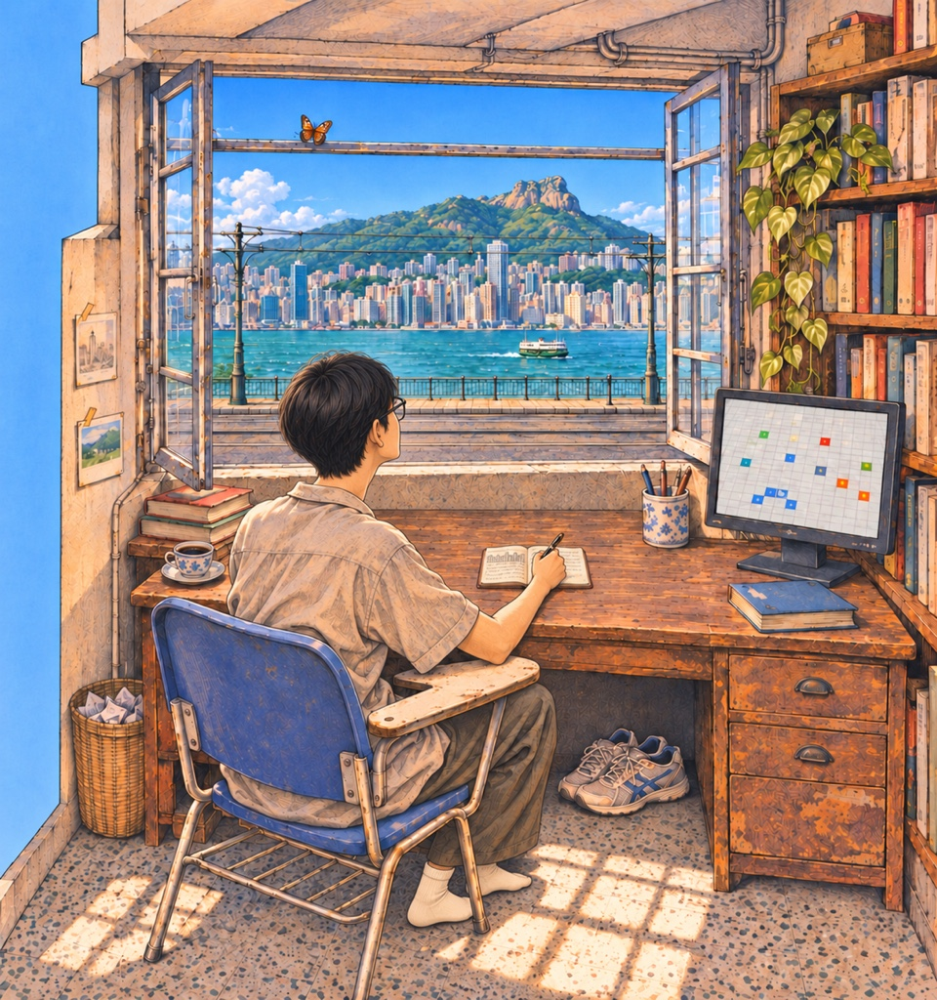
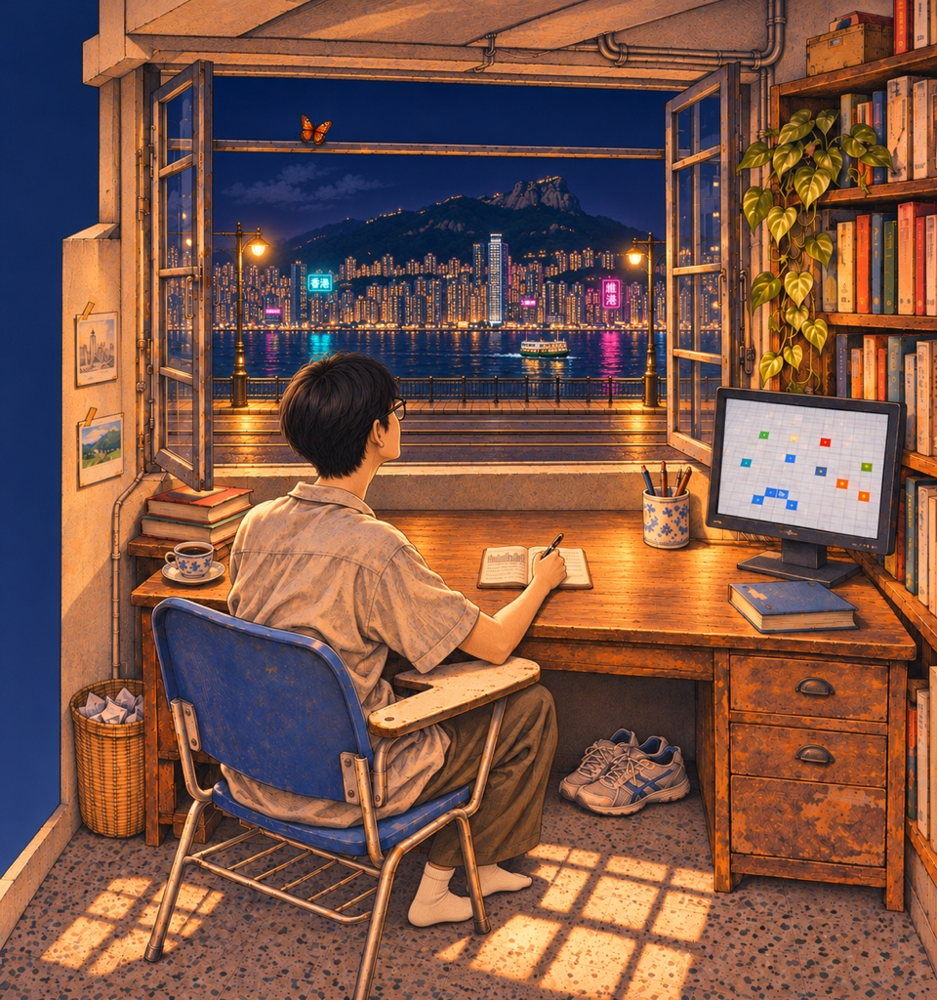

Skip to content
Sky
Writing
Engineering
Experience
About
◐


Fortuity is the beauty of life
Coffee break
The last semester
MicroVerse research
The view from (almost) fullway down
Endurance running
Pause background
Victoria Harbour, Hong Kong
Select a + to explore